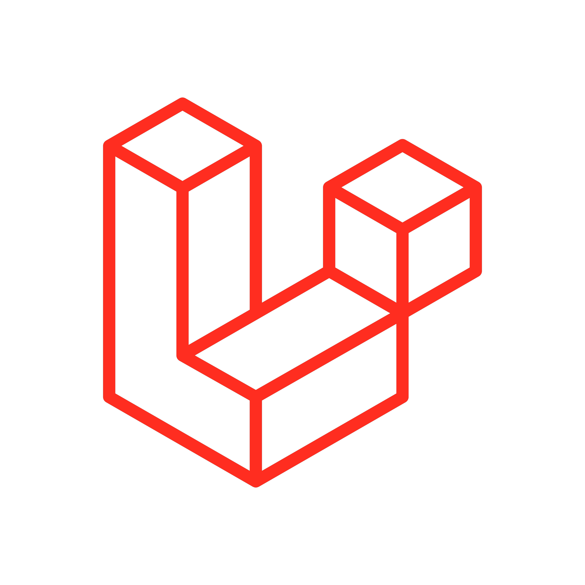
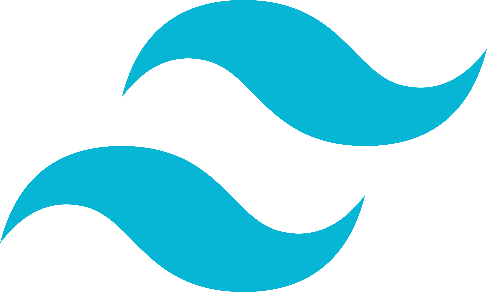
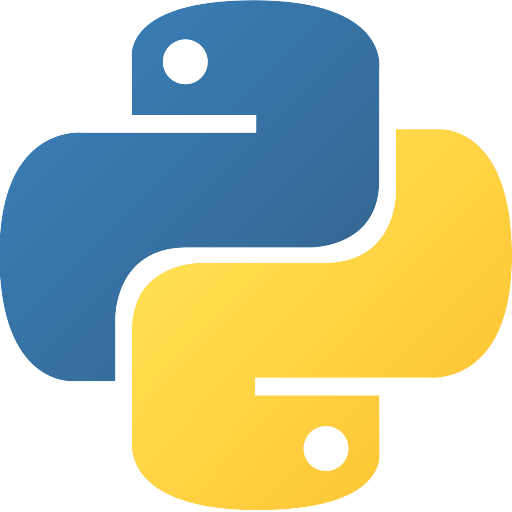
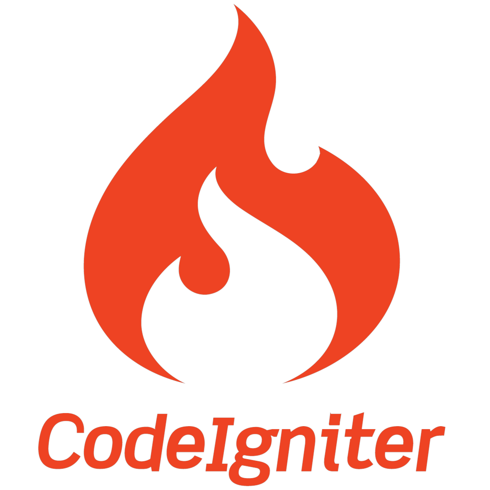
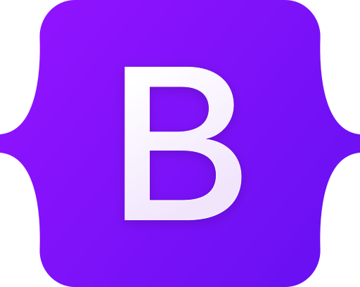

01
View on GitHub ↗Bioskop
Website pemesanan tiket bioskop sederhana.
Moh. Abdan Syakura Putra — developer yang tertarik membangun website yang rapi, responsif, dan mudah digunakan.
Saya sedang mengembangkan kemampuan di bidang web development dan senang mengubah ide menjadi pengalaman digital yang fungsional.
Saya adalah Moh. Abdan Syakura Putra, dengan latar belakang Teknik Informatika di Universitas Trunojoyo Madura. Fokus saya adalah web development, UI/UX, dan eksplorasi teknologi untuk membangun produk digital.
Saya juga memiliki pengalaman pengembangan web serta terbiasa bekerja dengan berbagai tools dan framework.





Beberapa project yang tercantum di portfolio sebelumnya.
Website pemesanan tiket bioskop sederhana.
Website pengelolaan kos sederhana.
Website untuk pencatatan presensi mahasiswa berdasarkan mata kuliah.
Website pemberian gaji karyawan berdasarkan jam kerja.
Punya ide atau ingin berdiskusi tentang project web? Kirim pesan melalui form.